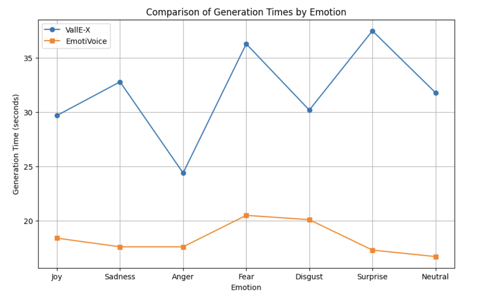

Testing Methods Testing
Testing Strategy
As a primarily generative model, most of our testing relies on quite subjective metrics
such as the degree of authenticity of an emotion, or intelligibility of speech. Thus, unit testing
does not form a large part of our testing strategy and is instead replaced by a mixture of human
and computer analysis of our model's outputs.
Additionally, we took into account objective values such as the time taken to produce an output,
as well as the number of attempts required to produce speech free from the kind of background
noise or static that generative TTS models are wont to produce occasionally.
Unit Testing
We made use of unittest framework to write unit tests in order to manually test individual components of our system. Making use of the unittest framework for unit tests, we ensure the correctness of code and dependencies, and prevent all bugs before deployment.
Unit Test: AnalysisManager
For unit testing of the AnalysisManager class, we have used patch function from theunittest.mockmodule. This is a powerful and versatile tool for replacing parts of our system under test with mock objects and making assertions about how they have been used. Below shows our unit tests for different methods of the AnalysisManager class.
Unit Test: AudioGenerator
We have also included unit tests for the AudioGeneratorclass. These test will test whether the correct audio file is being played, and the result when the audio file does not exist.
Unit Test: Utility
The Utility class is composes of miscellaneous methods that is utilised in different parts of the application. The two most important methods are generate_unique_id and check_audio_file_exists. Hence, we have included unit tests for these two methods to ensure that their functionalities are correctly implemented.
Unit Test: FileManager
The FileManagerclass ensures that the correct user input and emotion, as well as the unique ID is stored correctly. This is extremely important as this ensures that input text can be generated as emotional audio, integrating the frontend and backend of the application.
Hence, we utilise unit tests to ensure that all methods in FileManager class are correctly implemented without errors. We have also included error handling when data cannot be written.
In total, we have 13 unit tests for all the different classes. These unit tests can be executed in the terminal using the command python3 -m unittest discover -s test. As a result, all 13 tests are correct, which implies the related functions of the test are correctly implemented.
Performance Testing
Our performance testing compares the time taken by our (VALL-E-X) model to generate outputs to those by the alternative EmotiVoice. This is done using Windows hardware specifications available to us for the development period. This helps us consider possible improvements to be made in order for the model to produce audio as close to real-time as possible, a potential further development to the program.
Currently, the audio generation times below are also performed on a CPU. For more specialised machines with GPUs, the audio generation times will be improved drastically.
As displayed, Microsoft VallE-X took a consistently longer time to generate the same audio on average than EmotiVoice. While this is potentially a negative point for the use case of our project, it is something that can be improved with improvements in hardware available. Moreover, user preference from a survey for the audio output of our (Vall-E-X) model suggests that this is the better tradeoff to make, since Vall-E-X generates more realistic emotional audio.